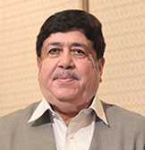
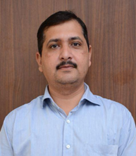

The management board is responsible for smooth running of the company in terms of financial, operational, legal and business development matters, including investment and strategic initiatives, which concerns the IKLL group portfolio.
Mr. Dileep Sanghani is the Nominee Non- Executive Chairman of M/s IFFCO Kisan Logistics Limited...

Chairman
Mr. K. J. Patel is the Managing Director of IFFCO, he is a highly accomplished mechanical engineer with over four decades...

Nominee Director
Mr. Ramesh Kumar holds the position of Nominee Director in IFFCO. Mr Kapur is also responsible for the Finance Division of IFFCO.

Nominee Director
Mr. Arun Kumar Sharma is currently occupying the position of Managing Director and CEO in IKLL..

Managing Director and CEO
Mr. Dushyant Chouhan is currently holding the position of Chief Financial Officer in IKLL...

CFO
Mr. Yogendra Kumar is holding the position of Nominee Director in IKLL...

Nominee Director
Mr. Sunil Kumar Khatri is currently occupying the position of Nominee Director of IKLL.

Nominee Director
Sh. Shivalingappa Patil has been appointed as Independent Director - IKLL for tenure of Five Years...

Independent Director
Smt. Kanak Chaturvedi has been appointed as Independent Director- IKLL for tenure of Five Years w,e.f..

Independent Director